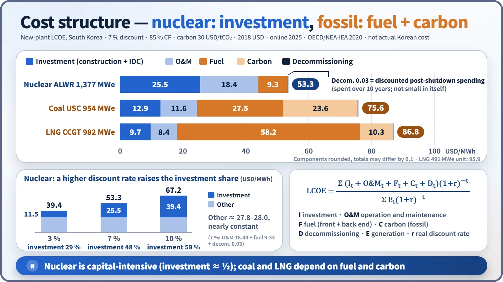
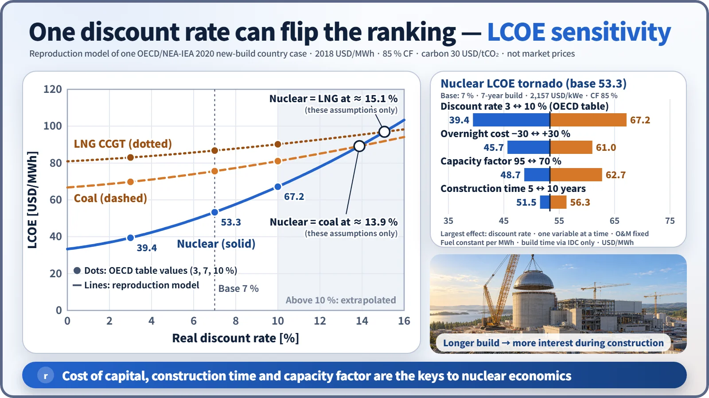
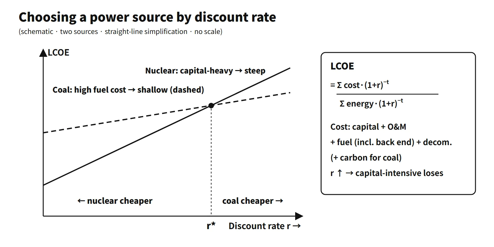

Policy, Economics & Reactor Types · C-PE-003
Nuclear Generation Cost and Economics — Capital, O&M, Fuel and the Discount Rate Behind the LCOE
Why a capital-intensive source lives or dies by the discount rate: 53.3 USD/MWh at 7 % for a new Korean ALWR, 39.4 at 3 % and 67.2 at 10 %.
Generation cost is the total cost a plant incurs over its life expressed per kWh (or MWh) generated. Comparisons use the levelized cost of electricity (LCOE): the constant unit price at which the present value of discounted total costs equals the present value of discounted generation.
Nuclear power is capital-intensive, with a large capital share and a small fuel share. That is why the discount rate, construction time and capacity factor decide its economics.
Principle and mechanism
Components of generation cost
| Component | Content | Nuclear characteristic |
|---|---|---|
| Capital cost | Construction cost (overnight) + interest during construction (IDC), annualized over the life | Largest share |
| O&M | Labor, maintenance, insurance, levies; fixed and variable parts | Mostly fixed |
| Fuel | Front end (concentrate, conversion, enrichment, fabrication) + back end (storage, disposal) | Small share |
| Decommissioning and back-end liabilities | Funded during operation | Internalized through regulated unit charges |
| Carbon cost | Cost of fossil emissions | Not applicable |
Capital cost and carrying charges
- Overnight cost: the construction cost assuming the plant were built overnight. It consists of direct and pre-construction costs, indirect costs (engineering, management), owner's costs and contingency; the OECD default contingency for nuclear is 15 %.
- Investment cost = overnight + IDC (+ escalation in real projects). With a 7-year build and a 7 % discount rate, IDC is about 28 % of the overnight cost.
- Carrying charges (rendered in the Korean exam paper as "prepaid expenses"): the annual fixed cost of keeping invested capital, made up of return on capital (interest, dividends), depreciation, taxes and insurance. It is the investment times the fixed charge rate (FCR); without taxes and insurance it equals the capital recovery factor CRF = r(1+r)ⁿ/[(1+r)ⁿ−1]. The interest on money tied up in fuel inventory goes by the same name.
The LCOE equation and its terms

LCOE = Σ(Iₜ + O&Mₜ + Fₜ + Cₜ + Dₜ)(1+r)−t / Σ Eₜ(1+r)−t
I is investment, O&M is operation and maintenance, F is fuel (including the back end), C is carbon cost, D is decommissioning, E is generation and r is the real discount rate. If construction spending is placed directly on the time axis, IDC is not added separately. The denominator is discounted because what is discounted is not the MWh itself but the value of the revenue from that MWh (OECD/NEA-IEA 2020).
Worked example (assumptions stated)
The assumptions are the OECD/NEA-IEA 2020 inputs for the Korean ALWR (1,377 MWe): overnight 2,157 USD/kWe (2018 USD), 7-year construction with even spending, 60-year life, 85 % capacity factor, r = 7 %, O&M 18.44 and fuel 9.33 (front end 7.00 + back end 2.33) USD/MWh.
- Investment: mid-year spending compounded to the completion date → 2,758 USD/kWe (IDC 27.9 %)
- CRF (7 %, 60 years) = 0.07×1.07⁶⁰/(1.07⁶⁰−1) = 0.0712
- Annual capital cost = 2,758 × 0.0712 = 196.5 USD/kW·yr
- Annual generation = 8,760 h × 0.85 = 7,446 kWh/kW
- Capital cost per unit = 196.5 / 7.446 = 26.4 USD/MWh
- LCOE ≈ 26.4 + 18.44 + 9.33 + 0.03 (decommissioning) ≈ 54.2 USD/MWh
The difference from the OECD table value of 53.3 comes from the discounting-time convention (mid-year vs end of year).
Fuel cycle cost: direct and indirect
- Direct costs: actual spending on materials and services. The nine elements of a recycle fuel cycle are (1) purchase of uranium concentrate, (2) conversion (UF₆), (3) enrichment (SWU), (4) fabrication, (5) spent fuel transport, (6) reprocessing, (7) recovered uranium conversion and credit, (8) plutonium credit (or MOX fabrication), and (9) treatment and disposal of high-level waste.
- Indirect costs: carrying charges (interest, taxes) on inventory and in-process material tied up for several years from purchase through discharge and credit recovery. The gap between spending time and burn time is reflected by discounting and compounding.
- Example (WNA, September 2021 prices): for 1 kgU of fuel, uranium 51 %, conversion 7 %, enrichment 24 % and fabrication 18 %, totalling 1,663 USD, or about 0.46 ¢/kWh at 45 GWd/t.
Influencing factors and sensitivity

| Variable (base 53.3 at 7 %) | Range | Nuclear LCOE |
|---|---|---|
| Discount rate | 3 ↔ 10 % | 39.4 – 67.2 |
| Overnight cost | −30 ↔ +30 % | 45.7 – 61.0 |
| Capacity factor | 95 ↔ 70 % | 48.7 – 62.7 |
| Construction time | 5 ↔ 10 years | 51.5 – 56.3 |
Only one variable was changed at a time. The construction-time range is a lower bound that reflects IDC only (real delays also raise the unit cost), and the capacity-factor range assumes O&M is a fixed cost. Within these ranges the discount rate has the largest effect.
Choosing a power source by discount rate: the discount rate represents the cost of capital and project risk. The higher it is, the less future fuel savings are worth, and the more nuclear is disadvantaged. Plot the LCOE (or the present value of revenue requirements) of each candidate as a function of the discount rate and find the crossover discount rate r. If the project discount rate is below r, nuclear is favored; above it, fossil is favored. Then recheck by varying fuel prices, carbon prices and capacity factor. In the model above, nuclear and coal cross at about 13.9 % and nuclear and LNG combined cycle at about 15.1 % (for these assumptions only).
What it means in a plant
South Korean data
| Fuel source (KRW/kWh) | 2024 | 2025 | Jan–Aug 2026 |
|---|---|---|---|
| Nuclear | 66.3 | 79.0 | 89.2 |
| Coal | 143.6 | 137.9 | 140.5 |
| LNG | 175.5 | 158.2 | 166.8 |
| Renewables | 138.0 | 124.6 | 129.5 |
| All | 128.2 | 124.5 | 132.8 |
These are the settlement prices by fuel source from the Korea Power Exchange EPSIS (retrieved 10 October 2026; they can change with revised settlements). A settlement price is not a cost. It is a market settlement value set by the SMP multiplied by the settlement adjustment coefficient plus capacity payments, so it moves with changes in the coefficients for nuclear and coal.
Back-end costs are set by the Korean regulation on the calculation of radioactive waste management costs and spent fuel management charges; the revision in force since 27 January 2026 is current (recalculated every two years).
- Spent fuel management charge: about KRW 620 million per PWR assembly (+92.5 %, the first increase since 2013) and about KRW 14.41 million per PHWR bundle (+9.2 %)
- Low- and intermediate-level waste management cost: about KRW 16.39 million per drum (+8.5 % from 2021)
- Decommissioning provision: differentiated by reactor type, about KRW 930 billion to 1.2 trillion per unit
- Effect: KHNP's burden rises from about KRW 0.8 trillion to 1.1 trillion a year, and the generation cost is expected to rise by about KRW 2–3 per kWh
Decommissioning looks small in the LCOE at 0.03 USD/MWh, but only because spending 60 years in the future is discounted.
Economic factors compared with fossil fuels
| Factor | Nuclear | Coal, LNG |
|---|---|---|
| Cost structure (7 %) | Investment 48 %, O&M 35 %, fuel 18 % | Coal: fuel + carbon 67 %; LNG 79 % |
| Discount rate and construction time | Sensitive | Less sensitive |
| Fuel price swings | Small effect, easy to stockpile | Large effect |
| Carbon price | None | Directly in the unit cost |
| Resources | Small amounts of uranium, stockpiled | Import-dependent, bulk transport |
On the OECD 2020 medians, new nuclear is cheaper than fossil at 3 %, and can be more expensive than fossil at 7 and 10 %. The Korean data show nuclear as the cheapest up to 10 %. Long-term operation (LTO) is at the lowest level of all sources.
External and system costs
- External costs: the EU ExternE results in €cent/kWh are nuclear 0.2–0.7, coal 2–15, gas 1–4 and wind 0.05–0.25. Accident risk and long-term waste management are partly internalized through levies, provisions and the nuclear damage compensation system.
- System costs: the LCOE is a busbar cost, so it leaves out transmission and distribution and the backup and balancing costs of variable sources. Complementary indicators such as VALCOE are used alongside it.
Regulatory basis
- Korea's Radioactive Waste Management Act and its Enforcement Decree: basis of the management charges and decommissioning provisions (revision in force 27 January 2026)
- Korea's Special Act on the Management of High-Level Radioactive Waste (enacted March 2025): background to making the charges realistic
- Electricity market operation rules: settlement prices and settlement adjustment coefficients
- OECD/NEA-IEA Projected Costs of Generating Electricity 2020: LCOE methodology. It is the 9th edition since 1983, and as the series was discontinued afterwards, it is the latest.
- Compared with when the questions were set: from 2001 to 2008 the nuclear settlement price was 38.1–43.1 KRW/kWh a year; in 2025 it was 79.0. The spent fuel charge, based on 2013 unit prices, was raised for the first time in January 2026.
Easily confused pairs
| A | B | |
|---|---|---|
| Settlement price vs generation cost | Market settlement value (with coefficients and capacity payments) | Actual cost (capital, O&M, fuel) |
| Overnight vs investment cost | Construction cost without interest | Overnight + IDC |
| CRF vs FCR | Capital recovery (interest + repayment) | CRF + taxes and insurance |
| Direct vs indirect (fuel) | Spending on concentrate, enrichment, fabrication, etc. | Carrying charges on inventory |
Key points at a glance
Model answer (10 points): levelized cost and nuclear economics
- Definition: the unit price at which the present value of discounted lifetime costs equals the present value of discounted generation times that constant price.
- Equation: LCOE = Σ(I + O&M + F + D)(1+r)−t / Σ E(1+r)−t.
- Components: capital (overnight + IDC, annualized with the CRF), O&M, fuel (front + back end), decommissioning and back-end liabilities.
- Nuclear structure: in South Korea at 7 %, investment 48 %, O&M 35 %, fuel 18 % — capital-intensive.
- Influencing factors: discount rate (39 → 67 USD/MWh from 3 → 10 %), construction time (IDC), capacity factor (spreading fixed costs), construction unit cost.
- Source selection: below the crossover discount rate r* on the LCOE–discount-rate curves nuclear is favored; above it, fossil.
- South Korea: 2025 nuclear settlement price 79.0 KRW/kWh (not a cost); back-end charges raised on 27 January 2026.
- Limits: transmission, grid and external costs are excluded → also examine system and external costs.

This is a model answer, not an official solution. It reflects the criteria current as of 2026.
Exam relevance
Generation cost and economics have appeared seven times in the Korean Professional Engineer (Nuclear Power) exam: 63rd exam (2001), session 2, Q6 (economic factors of fossil fuels and nuclear); 65th exam (2001), session 1, Q1 (capital cost); 67th exam (2002), session 4, Q4 (selecting generating facilities by discount rate); 68th exam (2002), session 1, Q10 (carrying charges); 71st exam (2003), session 1, Q8 (levelized cost); 71st exam (2003), session 3, Q3 (direct and indirect costs of the nuclear fuel cycle); and 2008 exam, session 2, Q1 (nuclear vs coal-fired generation). Short-answer items ask for definitions (capital cost, carrying charges, levelized cost), while essay items ask for cost structure, the effect of the discount rate on source selection and nuclear–fossil comparisons. Write the LCOE equation, state the assumptions behind any numbers, and do not present a settlement price as a generation cost.